El Trabajo bien hecho
Kinal es un Centro Educativo privado, no lucrativo, dirigido a la formación técnica profesional de jóvenes y adultos, de beneficio colectivo y asistencia social en favor de los sectores más necesitados de la comunidad. Nuestro valor fundamental es enseñar a realizar el trabajo bien hecho, que sea la base de la superación de alumnos y el medio para servir a los demás.
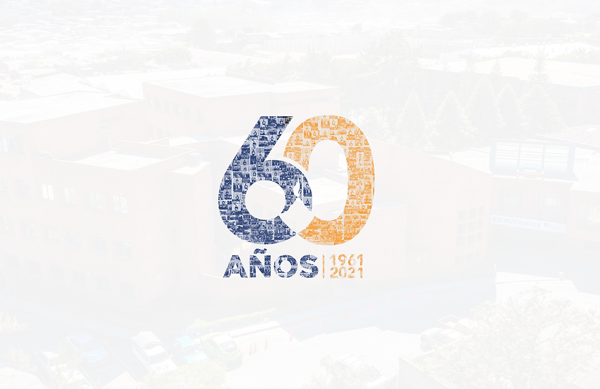 CAPACÍTATE
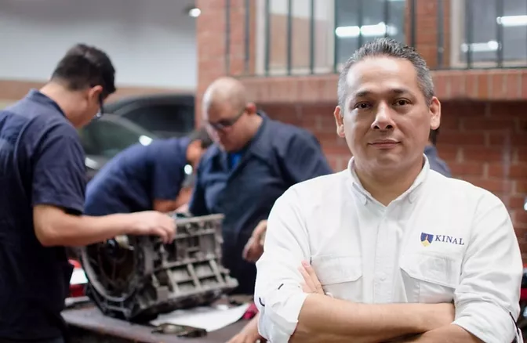
Carreras Técnicas
Contamos con más de 30 especialidades técnicas y tecnológicas que pueden favorecer tu crecimiento
y/o tu inserción laboral.
Peritos Técnicos
Se trabajan los programas técnicos y académicos con jóvenes entre 16 y 20 años para llevarlos a
realizar una tarea calificada en alguna especialidad técnica con tres años de duración. Al cabo de
los tres años el joven es apto para trabajar en el ramo técnico de la especialidad que eligió
estudiar; el título obtenido le permitirá ingresar a la universidad.
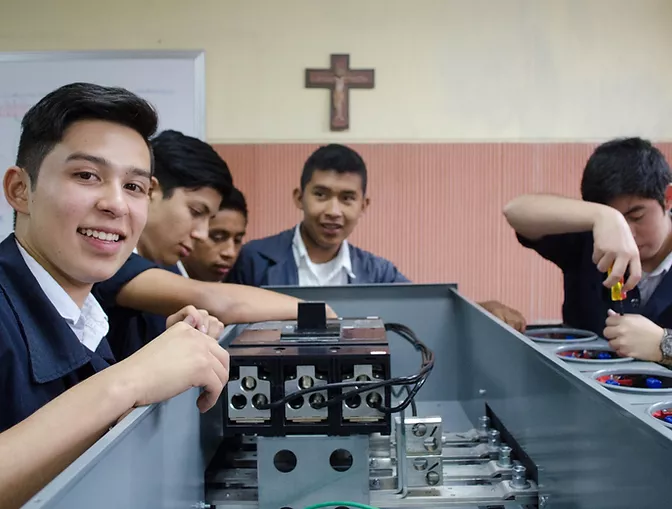
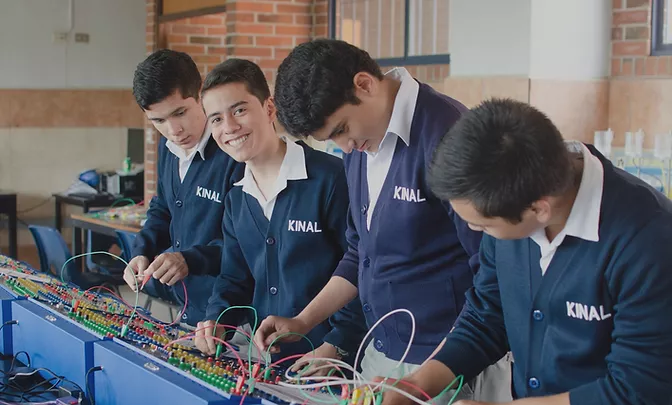
Educación Básica
Kinal ofrece su programa de Educación General Básica para todos aquellos jóvenes que buscan una
orientación técnica y excelencia académica.
Programas para tu negocio
Podemos diseñar conjuntamente el programa de formación profesional que mejor se adapte a tus
necesidades de capacitación.
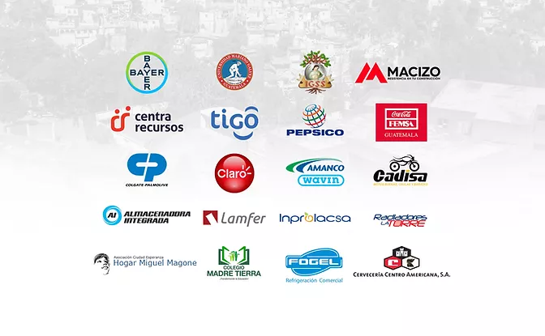
CAPACÍTATE
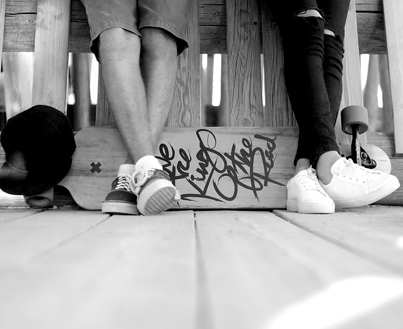
Técnicos Universitarios
Dirigido al fortalecimiento de mandos medios y especialmente aquellos que han cursado una carrera
técnica y desean continuar con estudios a nivel universitario. Estos estudios son avalados por la
Universidad del Istmo.
25k ESCUELA TECNICA
1500 CICLO BASICO
5K
DIVERSIFICADO
DIVERSIFICADO
31.5K TOTAL
𝑱𝒐́𝒗𝒆𝒏𝒆𝒔 𝒃𝒆𝒏𝒆𝒇𝒊𝒄𝒊𝒂𝒅𝒐𝒔
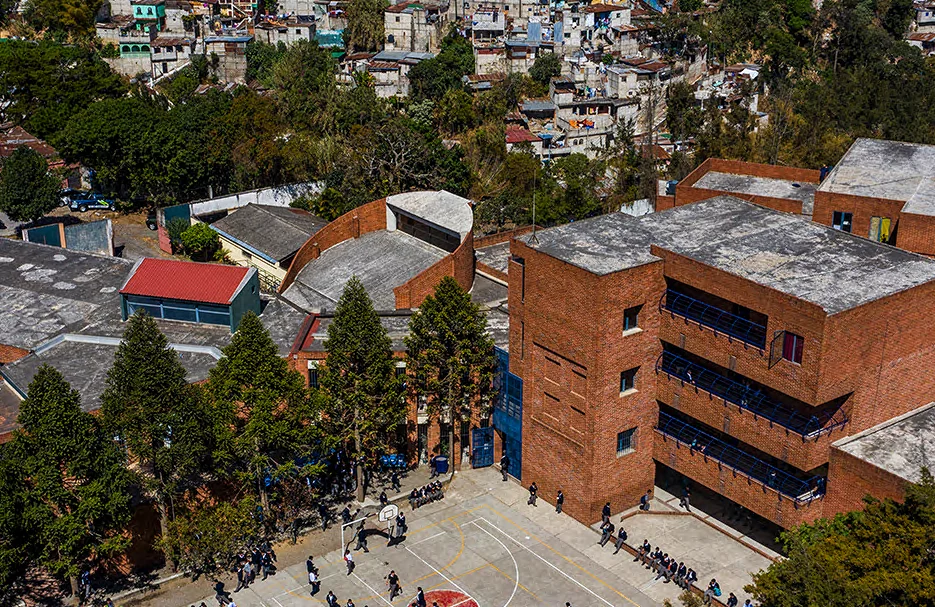
Necesitamos más
jóvenes de este lado
Cada donación que haces ayuda a la educación de un joven guatemalteco de escasos recursos a tener
una educación de calidad.
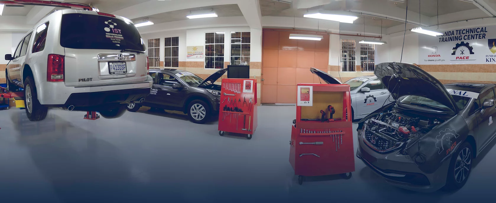


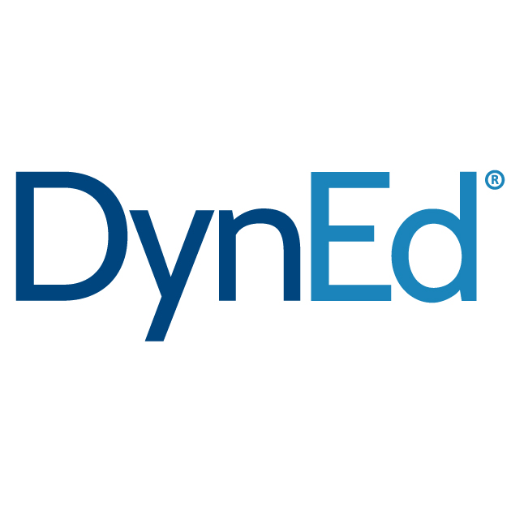
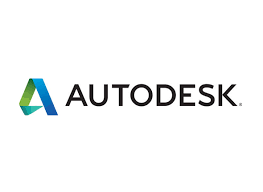
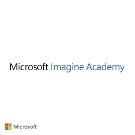
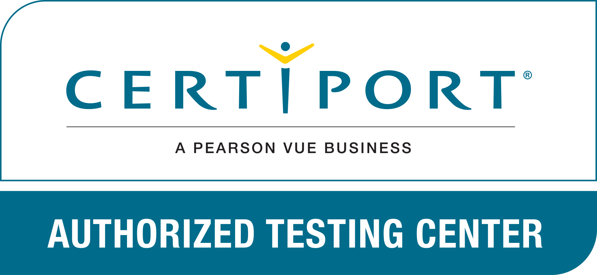

CONTÁCTANOS
infoets@kinal.org.gt
infotic@kinal.org.gt
infobas@kinal.org.gt
infocet@kinal.org.gt
6 avenida 13-54 zona 7, Colonia Landívar, 01007 Ciudad de
Guatemala, Guatemala, C.A.
Mi rediseño es mejor porque tiene mejor orden. Esta pagina tiene bastante creatividad, pues mantiene unas tonalidades de colores y es bastante interactiva. Pues mantiene una estandarización de cuadros que guardan imformación importante.